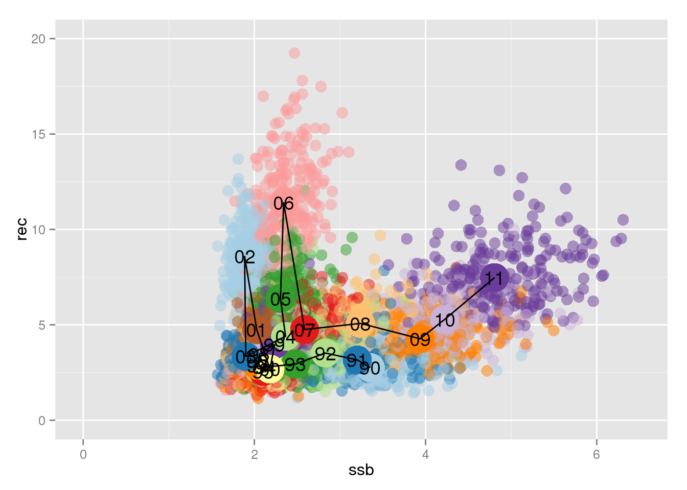
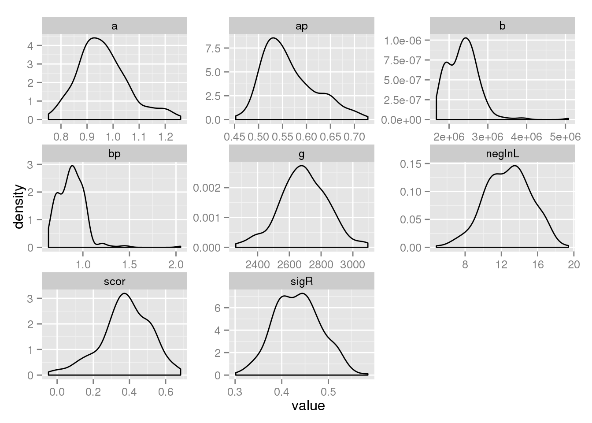
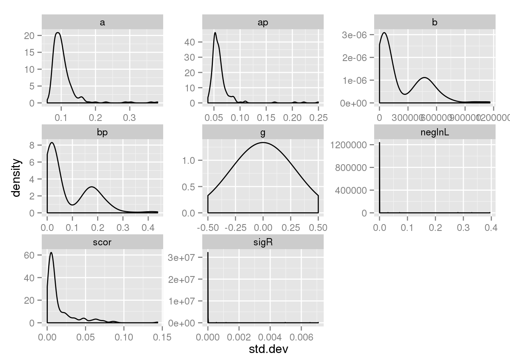

… some nice text here, explaining the objectives of the code snippet.
library(devtools)
install_github("mac","einarhjorleifsson")library(mac)
library(knitr)
library(FLSAM)## Warning: replacing previous import by 'utils::tail' when loading 'FLSAM'library(RColorBrewer)compile_admb2()sr <- rby[rby$year < 2012,c("year","r","ssbest")]
names(sr) <- c("year","r","ssb")
mac_srest_cat("Mackerel",
y1=min(sr$year),y2=max(sr$year),
aR=0,aP=12,
opt_sr_model = 3,opt_pen = 1,
r = sr$r,ssb=sr$ssb,year=sr$year)run_admb("srest")x <- read.table("srest.std",header=TRUE)
kable(x)| index | name | value | std.dev |
|---|---|---|---|
| 1 | ap | 5.509e-01 | 4.700e-02 |
| 2 | bp | 8.817e-01 | 2.020e-02 |
| 3 | a | 8.504e-01 | 7.250e-02 |
| 4 | b | 2.497e+06 | 5.716e+04 |
| 5 | sigR | 3.967e-01 | 0.000e+00 |
| 6 | scor | 2.702e-01 | 3.700e-03 |
| 7 | g | 2.832e+03 | 0.000e+00 |
| 8 | neglnL | 1.088e+01 | 0.000e+00 |
The solution is to wrap steps 1-3 above into a loop and store the resulting output from each run in an R-object. 1. Generate the mcmc realizations
nits <- 250 # Small test run
Mac.sam@control <- Mac.ctrl
stk <- monteCarloStock(Mac,Mac.sam,nits,run.dir="~/ass/2014/mac/tmp")
x <- melt(ssb(stk))[,c("iter","year","value")]
names(x)[3] <- "ssb"
y <- melt(rec(stk))[,c("iter","year","value")]
names(y)[3] <- "rec"
sr_data <- join(y,x)
sr_data <- sr_data[sr_data$year %in% 1990:2011,]
PAIRED <- rep(brewer.pal(12,"Paired"),100)
n <- length(unique(sr_data$year))
ggplot(sr_data) +
geom_point(aes(ssb/1e6,rec/1e6,col=factor(year)),alpha=0.5,size=4) +
scale_colour_manual(values=PAIRED[1:n]) +
theme(legend.position="none") +
geom_point(data=rby[rby$year %in% 1990:2011,],
aes(ssbest,r,col=factor(year)),size=10) +
geom_text(data=rby[rby$year %in% 1990:2011,],
aes(ssbest,r,label=str_sub(year,3,4))) +
geom_path(data=rby[rby$year %in% 1990:2011,],
aes(ssbest,r)) +
labs(x="ssb",y="rec") +
xlim(0,6.5) + ylim(0,20)## Warning: Removed 2 rows containing missing values (geom_point).
for (i in 1:nits) {
sr <- sr_data[sr_data$iter == i,]
mac_srest_cat("Mackerel",
y1=min(sr$year),y2=max(sr$year),
aR=0,aP=12,
opt_sr_model = 3,opt_pen = 1,
r = sr$rec,ssb=sr$ssb,year=sr$year)
run_admb("srest")
x <- read.table("srest.std",header=TRUE)
x$iter <- i
if(i == 1) {
res <- x
} else {
res <- rbind(res,x)
}
}ggplot(res,aes(value)) + geom_density() +
facet_wrap(~ name,scale="free")
ggplot(res,aes(std.dev)) + geom_density() +
facet_wrap(~ name,scale="free")